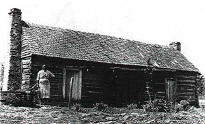
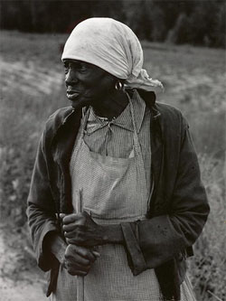

|
Despite Alabama's rank as the fourth leading slave state in 1860, its
institution of slavery began tardily and progressed sluggishly for more than a
century. Settled by Europeans in 1702 as a corner of Louisiana, Alabama was
sparsely populated, and blacks were scarce. Vague population estimates indicate
no more than 6,000 blacks in the entire colony, with Alabamians comprising an
almost insignificant portion of the total. Patterns of slaveholding changed
little during subsequent British and Spanish colonial administrations. The first
American census of Washington County, Mississippi Territory (which, in 1800,
included all the settled portions of Alabama except the Mobile district),
counted only 494 blacks. Major growth did not occur until after the War of 1812,
when a mass migration of settlers flooded Alabama. By 1817, blacks constituted
nearly one-third of roughly 30,000 settlers; and from that point, the federal
census returns mark phenomenal growth.
Federal population figures reflect a black increase of nearly 400,000 in just
fifty years, a growth rate of 939 percent compared to a much smaller increase of
516 percent for whites and 371 percent for free people of color. In the last
antebellum decade, however, growth was more balanced (27 percent for slaves; 24
percent for free population). While the number of slave owners increased by
15.14 percent, their percentage in the free population actually dropped about
one-half percentage point (from 6.83 to 6.37), while the average number of
slaves per owner rose slightly from 11.7 to 12.9.
Even in the peak years of Alabama's affluence, large-scale slaveholding
plantations were not the typical agricultural unit. Masters of twenty or more
slaves in 1850 represented only 16 percent of all slave owners and still less
than 18 percent in 1860, while the number holding fifty or more increased from 4
to 5 percent, and holders of one hundred or more rose from .80 to 1.03 percent.
On the eve of the war, only fifty-one Alabamians owned 172 or more and only nine
held at least 300. The 647 slaves of John W. Walton of Greene County represented
the extreme example.
Clearly, the insignificant changes in slaveholding patterns do not represent a
rapidly expanding slavocracy. Considering that the slave increase was less than
3 percent greater than that of the free population in the same period, the major
|

Slave quarters on an Alabama plantation
|
factors contributing to Alabama's expanding slave population appear to have been
natural increase and the westward migration of whites with slave families,
rather than wholesale purchases of individual slaves from older states.
Geographically, Alabama's black population was massed principally in the south,
with a secondary cluster along the Tennessee River Valley in the extreme north
of the state. The highest concentration appeared in the Black Belt, where dark,
fertile, limestone and clay soils cut a crescent-shaped swath across Alabama's
coastal plain. Significant slaveholdings were also found in the lands radiating
out from the Black Belt, in other river valleys, and in the Mobile area.
Even in the two major plantation regions, the most common agricultural units
were small to medium-sized farms. The average improved acres per farm in
Montgomery County, in 1850, for example, were 211, a figure that included
pastures as well as tilled lands. The corresponding average plantation in the
"rich" Tennessee Valley county of Madison claimed an even smaller 153 improved
acres. Large plantations with stately mansions housing men of great wealth and
influence were scarce. The 5 percent of slaveholders who held 50 or more and the
5 percent of planters who owned more than 500 acres, in 1860, must be considered
"super planters." Their numbers represented only three-tenths of 1 percent of
the state's population, yet they owned 30 percent of its real estate, 30 percent
of its slaves, and 27 percent of its personal property. As such, 28 percent of
the state's wealth was in their hands.
Economic power in this slave society, however, was not synonymous with political
power. At no time did large slaveholding planters hold over 25 percent of the
seats in the legislature, and fewer than 10 percent of men owning fifty or more
slaves in 1860 had ever served in a legislative body. Significantly, the tax
burden was unusually heavy on the planter class, with 70 percent of the state's
revenue coming from the levy on land and slaves.
Despite the heavy tax burden of the planter, in a state that produced 23 percent
of the nation's cotton and 5 percent of its corn, the road to wealth was a rural
one. Only a small minority of the population lived in urban areas: less than 5
percent of the slaves and less than 7 percent of the free population in 1860.
Free blacks, who were 44 percent urban in that year, were the only group
approaching a rural-urban balance.
Within the urban minority, however, blacks were not evenly dispersed.
Representing 45 percent of Alabama's population in 1860, blacks comprised 60
percent of the population in Tuscaloosa (west Alabama's trade center), nearly 51
percent in Montgomery (the state capital), 43 percent in Huntsville (trade
center of the Tennessee Valley) and only 29 percent in Mobile (whose free blacks
at 3 percent of the city's population represented the largest concentration of
that class). Within small urban communities, the black population was
drastically smaller.
While a small portion of urban blacks might be considered "drifters," and others
were actually agricultural laborers enumerated with a town-dwelling master, many
skilled slaves were a vital part of the urban economy. As blacksmiths
carpenters, brick masons, livery stable owners, wagoners, taxi operators,
confectionery shop owners, barbers, druggists, and tradesmen of other sorts,
some worked directly under white supervision while others lived on their own
recognizance. A significant number "hired their time." Some were simply "turned
loose" by their owners. News-hungry editors and outspoken letter writers
occasionally complained about the number of unsupervised slaves among them, with
scant results. The only keen opposition came from the small class of white urban
workers, usually immigrants, who were in direct competition with skilled slaves
for jobs.
As with all aspects of slavery, tremendous variation existed in the nonworking
lives of bondsmen. While social and religious activities usually were subject to
the wishes of the master, they were not necessarily confined to Sundays or
holidays. While state laws mandated white presence at slave gatherings, such
regulations were only loosely enforced in Alabama's lax slave regime. Slaves
held socio-religious activities in all-black churches or in interracial churches
in which blacks worshiped separately from whites. Some masters permitted slaves
to travel to camp meetings on their own accord, despite the accompanying risks
such as those evidenced by the slave runaway notice in which a master advertised
for a group of his slaves who had gone off to a revival and had not returned.
Black preachers, both ordained and unordained, enjoyed the highest social niche
in the slave community; many preached openly while others held clandestine
prayer services, depending upon plantation regulations.
Almost universally, religious activities were the center of social life within
the slave community; still, many festivities were entirely dissociated from
religion. Saturday night social gatherings on plantations were often a reward
for, as well as a respite from, the week's labor. Dances on a larger scale often
were scheduled when crops were laid by, and a host of other events varied over
time and place--as, for example, the annual barbecue and picnic sponsored by
Montgomery businessmen for that city's Draymen's Association, in appreciation of
the "honesty and diligence" of the local black draymen.
By law, a slave could not own property (even himself); but, by custom, masters
commonly permitted it. Most slaves seemed to have owned such small items as
fowls, livestock, and other produce of their after-hours labor. The
accomplishments of some under this system (particularly those with skills or
trades needed in the local community) phenomenally demonstrated ingenuity and
ambition. The economic elite among them owned not merely saddle horses, wagons,
and teams, but also real estate, stores, and even other slaves. There appear
cases of slaves loaning cash to free men, including whites, and suing when they
were not repaid. Making money became easier during the Civil War when departing
masters made sharecropping agreements with trusted slaves who were to look after
their property; in some such cases plantations were entirely under black
management. Cash also was more readily available when Union forces invaded an
area, bringing hardy appetites and unquenchable thirsts for hard liquor that
enterprising blacks readily provided.
|

An Alabama slave
|
Statistics on slave runaways are difficult to interpret with confidence, even
when available. Most owners appear not to have advertised in the newspapers, as
required by law, or delayed doing so until it became clearly apparent that the
slave had absconded and was not merely "taking a vacation." Of the 443 notices
involving 562 fugitives published in the Huntsville newspapers between 1820 and
1860, only 182 were placed by owners; the bulk (380) were placed by sheriffs who
arrested them. Once found and advertised, slaves were generally claimed; only 24
were sold at public auction, owner unknown.
Newspaper notices also reveal much about the motives and the destinations of
runaways. Mobile was almost as attractive as points northward--perhaps due to a
combination of the promised excitement of city life, the greater opportunity for
jobs, and the increased chance of blending into the urban black population.
However, most runaways, because of the migratory westward-moving nature of their
owners, attempted to rejoin family members from whom they had been separated.
No major slave insurrections occurred in Alabama, although alleged conspiracies
cropped up occasionally. Personal protests of a criminal nature were not
uncommon, ranging from barn or house burnings to manslaughter or murder. (No
special legal charge existed for blacks who took white lives.) Once charged,
slaves were tried according to the forms of law. The accused had a right to
legal counsel and a trial by jury. Although black testimony against whites was
proscribed, it did occur under various circumstances. Implementors of the law
(attorneys, judges, and jurymen) were white; yet extant court records reveal
relative justice. Slaves accused of even the more serious crimes of murdering or
raping whites were sometimes declared innocent or their actions were deemed
"justifiable"; some were freed on legal technicalities; and a significant number
appealed convictions with success.
Ironically, the harsh legal system provided more protection, or loopholes, for
the oppressed than for the freeman. An influential master could secure the
acquittal or pardon of a slave who was clearly guilty but whose crime was not a
threat to society. Often, juries felt that the mandatory death sentence was too
severe and would actually find innocent an obviously guilty slave rather than
have him executed, especially in cases of black-on-black crime. The economic
value of the slave criminal to his master surely was a contributing factor in
such cases. At the same time, these same "lenient" whites could subvert the
legal system, in the case of especially heinous crimes, and mete out extralegal
"justice" in the form of lynching.
Once the slave was convicted, the punishment often differed from that of whites
who committed the same crime. Branding and other forms of mutilation gradually
declined for both blacks and whites in the 1830s and are rarely found after
1842, when the state penitentiary was constructed. Yet imprisonment and fines
were not as effective when applied to the non-free population. Therefore, slave
punishments tended to be physical, with whipping the usual prescribed
measure.
White-on-black crime is also documented by extant court records, of mixed
natures and with mixed results. Cases of severe abuse of slaves by their owners
were relatively rare and usually decried. Occasional cases of failure to provide
adequately for slaves were dealt with more leniently. Cases of assaults against
slaves brought conviction more often when the accused was someone other than the
owner or his overseer.
Society did display a marked tendency to protect the freedom of those entitled
to it. There were no known instances of free blacks remanded to slavery for
violations of the law, even when it was legal to do so. More significantly, in
92 percent of the cases in which slaves sued their owners, alleging to be
illegally enslaved, the courts ruled in their favor, and public actions on the
part of citizenry often prevented accused owners from spiriting away the slave
who claimed to be free.
Public concern for the protection of free blacks apparently was engendered by
several factors. To some extent, it might be considered an extension of each
freeman's concern that his own rights be forever assured under the law. To a
greater degree, probably, white concern for free blacks was influenced by the
relatively small size of the latter population. Most such men and women were
well known in their community, frequently associated with whites in economic,
religious, and even social activities, and usually earned the respect of the
dominant population. Moreover, their numbers did not constitute a threat to the
political or social system. While politicians were able to play upon white fears
with regard to the necessity of keeping black masses in slavery, they were never
successful in using the free black as a major political issue in Alabama.
While free black numbers climbed noticeably throughout almost all of the
antebellum period (to 2,690 in 1860), the percentage of slaves who earned
freedom in Alabama peaked early. From the 1830s, manumission laws became more
restrictive until the practice was theoretically outlawed in 1860. Nevertheless,
masters found ways to circumvent legislation. Some merely "turned loose" the
favored slave, granting him de facto freedom, while others bequeathed
quasi-freedom by willing their slaves to relatives with the stipulation that
they be provided for and not expected to labor. One of the most ingenious
circumventions of the law was devised by the slave who purchased himself and
thereafter was his own slave and his own master.
Many free blacks, across the state, were respected members of society. A sizable
number were also slave owners, in some cases purchasing non-relatives for labor.
Most free people of color, as did some slaves, supported the Confederacy, not
merely because they may have felt compelled to do so, but also because they
stood to lose as much in defeat as would their white neighbors. The propensity
of the Union army to take what it needed from anyone who had it, regardless of
color, also alienated both free blacks and slaves who were victimized.
Emancipation within Alabama was an extended process. As the Union army
periodically penetrated the state, beginning in April 1862, some slaves followed
in its wake as refugees. Others joined its ranks to serve as body servants,
soldiers, guides, wagoners, laborers, and other support personnel. With the
defeat of the Confederacy, the final abolition of slavery was foregone,
reinforced in Alabama by a provision of the new state constitution of 1865 as
well as by the Thirteenth Amendment to the U.S. Constitution.
Source: Randall M. Miller and John David Smith, eds. Dictionary of
Afro-American Slavery (Westport, CT: Praeger, 1997), 38-44.
|